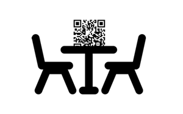

eKantien is een handige tool die de ober assisteert. Of je nu een efficiënter bestelsysteem of een afstandsmaatje zoekt, eKantien biedt talloze mogelijkheden. De applicatie is makkelijk in gebruik en op elk soort evenement in te zetten.
De indeling is zoals bij een bar: functies voor de klanten en functies voor de medewerkers. Bezoekers geven via eKantien hun bestelling door, de toogbediende ontvangt ze.
Er is ook track-and-trace, een geliefde functie.
EENVOUDIG "De benodigdheden voor eKantien: twee QR-codes, een smartphone en internetverbinding. Wij zorgen voor de tijdelijke opslag van gegevens en de opstelling van het menu.”
MOBIEL “Het concept is bij veel gelegenheden inzetbaar: horeca, tijdelijke evenementen, sportclubs… De gebruikte QR-codes zijn permanent of tijdelijk en overal te gebruiken. ”
ALTERNATIEF VOOR BESTELLING OP PAPIER
-> Vermijden om tussen tafels te lopen
-> Intuïtief gebruik
Kijk hoe (registreren) en (bestellen) in zijn werk gaat en vraag een (proefperiode) aan

STAP 1
Scan de QR-code op de tafel.
STAP 2
Plaats je bestelling.
STAP 3
Verstuur.
STAP 1
Scan de QR-code van de toog.
STAP 2
Bekijk de bestellingen.
STAP 3
Duid aan met welke bestelling je begint.
Verklaring privacy, 4 weken regel, wetgeveing... Contact